Bar Chart
Basic Aesthetic
# Color Aesthetic
ggplot(data = diamonds) +
geom_bar(mapping = aes(x = cut, fill = cut ))ggplot(data = diamonds) +
geom_bar(mapping = aes(x = cut, fill = color ))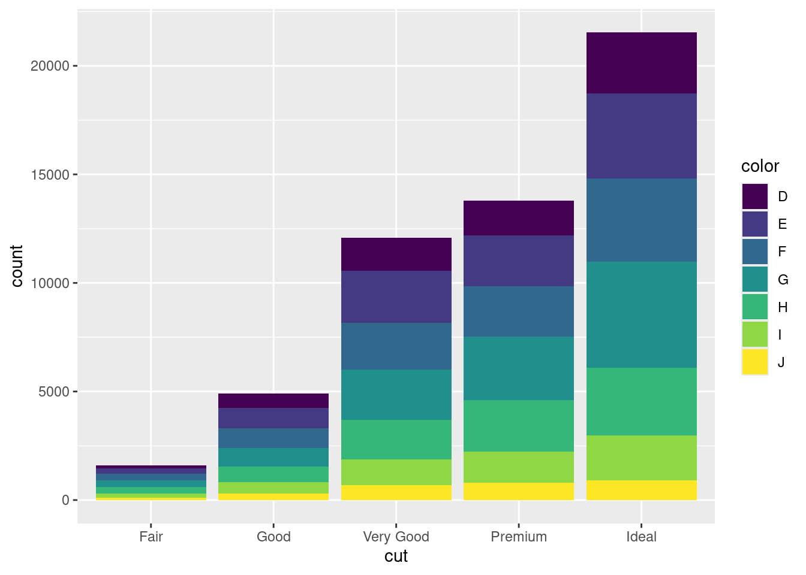
# Position aesthetic
# position adjustment options: "identity", "dodge" or "fill".
# position =“fill” is like overlay, but each bar has same height.
# position =“dodge” put objects together
ggplot(data = diamonds, mapping = aes(x = cut, fill = clarity)) +
geom_bar(alpha = 1/5, position = "identity")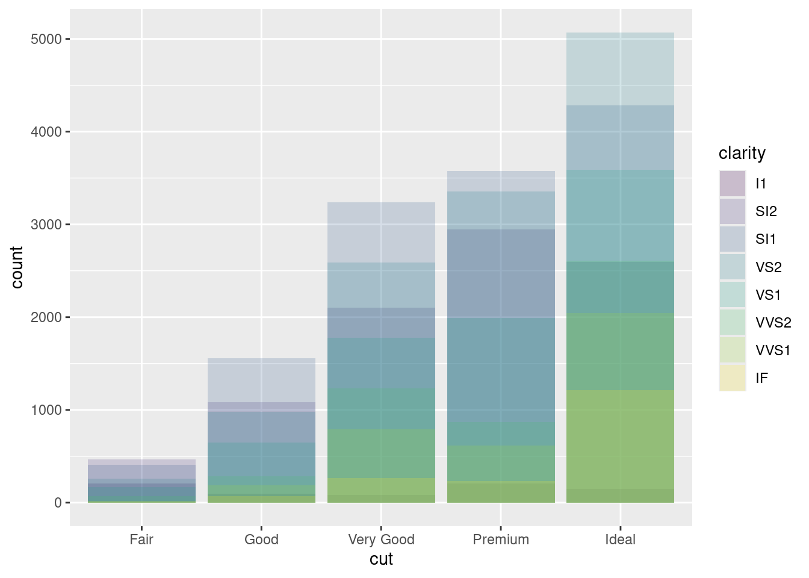
Grouped and Stacked Barplot
Position Option
# library(viridis)
# library(hrbrthemes)
p1 <- ggplot(data = diamonds) +
geom_bar(mapping = aes(x = cut, fill = clarity), position = "dodge")+
scale_fill_viridis(discrete = T) +
ggtitle("Add Title Here...") +
theme_ipsum() +
xlab("")
p1
p2 <- ggplot(data = diamonds) +
geom_bar(mapping = aes(x = cut, fill = clarity), position = "stack")+
scale_fill_viridis(discrete = T) +
ggtitle("Add Title Here...") +
theme_ipsum() +
xlab("")
p2p3 <- ggplot(data = diamonds) +
geom_bar(mapping = aes(x = cut, fill = clarity), position = "fill", width = 0.5) +
theme(axis.text.x = element_text(angle=65, vjust=0.6)) +
labs(title="Add Title Here...",
subtitle="Add Subtitle Here...")
p3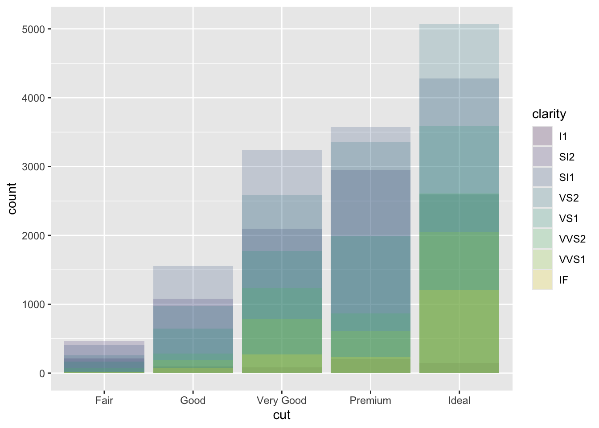
Facet Option
ggplot(data = diamonds, mapping = aes(x = cut, colour = clarity)) +
geom_bar(fill = NA, position = "identity")+
facet_wrap(~color) +
theme(legend.position = "top")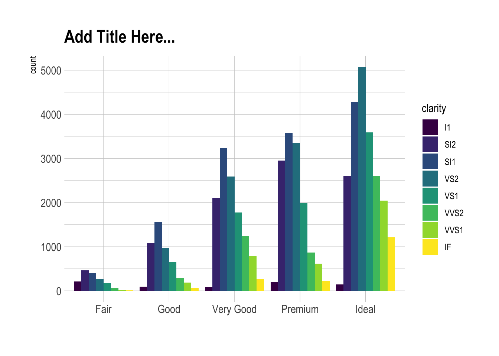
# Graph
ggplot(data = diamonds, mapping = aes(x = cut, colour = clarity)) +
geom_bar(fill = NA, position = "identity")+
scale_fill_viridis(discrete = T, option = "E") +
ggtitle("Add Title Here...") +
facet_wrap(~color) +
theme_ipsum() +
theme(legend.position="none") +
xlab("")Negative Values
Stacked barplot with negative values with ggplot2
# Load the dataset that is stored on the web
data <- read.table("./01_Datasets/stacked_barplot_negative_values.csv", header=T, sep=",")
# transform the format
data_long <- gather(data, group, value, groupA:groupD) %>%
arrange(factor(x, levels = c("Jan", "Feb", "Mar", "Apr", "May", "Jun", "Jul", "Aug", "Sept", "Oct"))) %>%
mutate(x=factor(x, levels=unique(x)))
# And that's the result!
head(data_long, 4) %>%
kable(caption = "Data sets", format = "html") %>%
kable_styling(latex_options = "striped")| x | group | value |
|---|---|---|
| Jan | groupA | 12 |
| Jan | groupB | 19 |
| Jan | groupC | -9 |
| Jan | groupD | 2 |
# library(hrbrthemes)
# library(viridis)
# plot
ggplot(data_long, aes(fill=group, y=value, x=x)) +
geom_bar(position="stack", stat="identity") +
scale_fill_viridis(discrete=TRUE, name="") +
theme_ipsum() +
ylab("Money input") +
xlab("Month")Percentage Plot
Calculate Percentage in Data
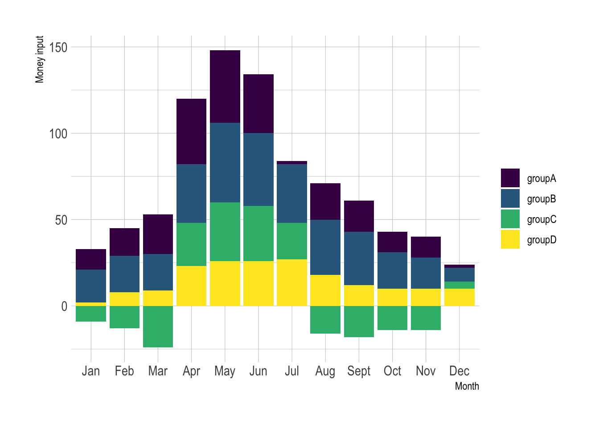
Transfer Percentage in ggplot
data(tips, package = "reshape2")
library(scales) # for percentage scales
## Alternative 1
ggplot(data = tips) +
geom_bar(mapping = aes(x = day,
y = ..prop..,
group = 1,
fill = factor(..x..)
)
)+
scale_y_continuous(labels = scales::percent) +
labs(title="Add Title Here...")+
ylab("relative frequencies")+
theme_classic()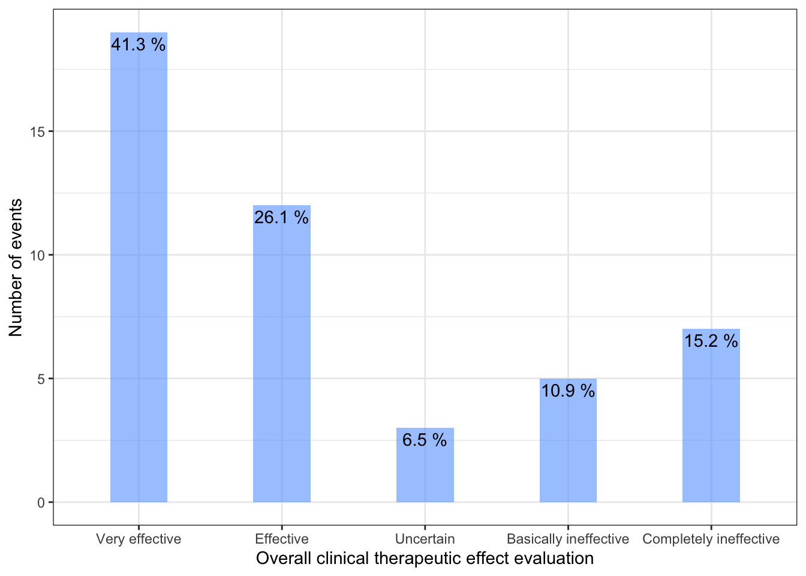
## Alternative 2
ggplot(tips, aes(x = day)) +
geom_bar(aes(y = (..count..)/sum(..count..), fill=day))+
scale_y_continuous(labels = scales::percent) +
labs(title="Add Title Here...")+
ylab("relative frequencies")+
theme_classic()## Alternative 3
ggplot(tips, aes(day, group = sex)) +
geom_bar(aes(y = ..prop.., fill = factor(..x..)), stat="count") +
scale_y_continuous(labels=scales::percent) +
ylab("relative frequencies") +
facet_grid(~sex)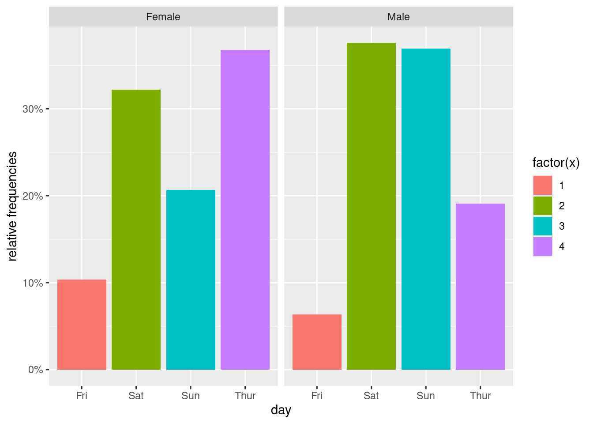
## Alternative 4
ggplot(tips, aes(x= day, group=sex)) +
geom_bar(aes(y = ..prop.., fill = factor(..x..)), stat="count") +
geom_text(aes( label = scales::percent(..prop..),
y= ..prop.. ), stat= "count", vjust = -0.5) +
labs(y = "Percent", fill="day") +
facet_grid(~sex) +
scale_y_continuous(labels = scales::percent)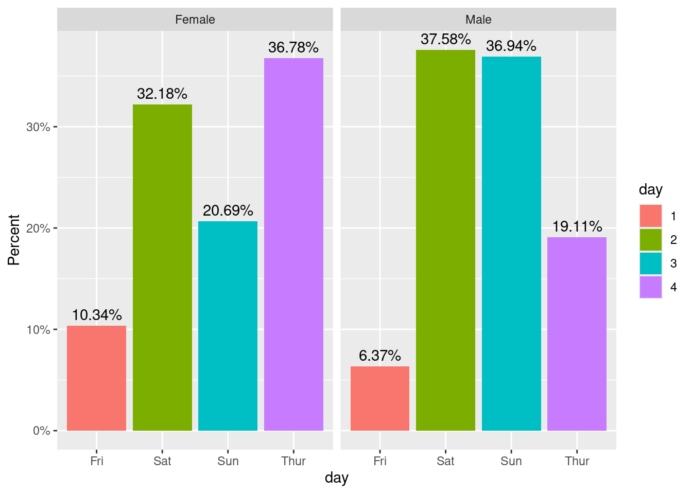
Text
Add Text by Group
Rotation_5 <- readRDS(file = "./01_Datasets/Rotation_5.rds")
ggplot(data = Rotation_5, aes(x = Visit, y= Percentage, fill=Treatment)) +
geom_bar(stat="identity", width =0.5,
position=position_dodge()) +
geom_text(aes(label=N), vjust=1.6, color="white",
position = position_dodge(0.5), size=3.5)+
geom_text(aes(label=P, x=Visit, y=0.97),hjust=0.4, size=3.5)+
scale_fill_brewer(palette="Paired")+
scale_y_continuous(labels = scales::percent, breaks=seq(0, 1, 0.1)) +
theme_bw() +
theme(legend.position = "none") +
labs(x = "",
y = "Responder rate",
title = "Rotational stability within 5° from Visit H0 (sitting)")Change Text and Bar Color
The ggtext package defines two new theme elements, element_markdown()
and element_textbox(). Both behave similarly to element_text() but
render the provided text as markdown/html. element_markdown() is meant
as a direct replacement for element_text(), and it renders text without
word wrapping. To start a new line, use the
tag or add two spaces
before the end of a line.
# remotes::install_github("wilkelab/ggtext")
# library("ggtext")
# library("glue")
data <- tibble(
bactname = c("Staphylococcaceae", "Moraxella", "Streptococcus", "Acinetobacter"),
OTUname = c("OTU 1", "OTU 2", "OTU 3", "OTU 4"),
value = c(-0.5, 0.5, 2, 3)
)
data %>% mutate(
color = c("#009E73", "#D55E00", "#0072B2", "#000000"),
name = glue("<i style='color:{color}'>{bactname}</i> ({OTUname})"),
name = fct_reorder(name, value)
) %>%
ggplot(aes(value, name, fill = color)) +
geom_col(alpha = 0.5) +
scale_fill_identity() +
labs(caption = "Example posted on **stackoverflow.com**<br>(using made-up data)") +
theme(
axis.text.y = element_markdown(),
plot.caption = element_markdown(lineheight = 1.2)
)Change Coordinate
# coord_polar() uses polar coordinates
bar <- ggplot(data = diamonds) +
geom_bar(
mapping = aes(x = cut, fill = cut),
show.legend = FALSE,
width = 1
) +
theme(aspect.ratio = 1) +
labs(x = NULL, y = NULL)
bar + coord_flip()
bar + coord_polar()
Ordered Bar Plot
## Ordered Bar Chart
cty_mpg <- aggregate(mpg$cty, by=list(mpg$manufacturer), FUN=mean) # aggregate
colnames(cty_mpg) <- c("make", "mileage") # change column names
cty_mpg <- cty_mpg[order(cty_mpg$mileage), ] # sort
cty_mpg$make <- factor(cty_mpg$make, levels = cty_mpg$make) # to retain the order in plot.
# Draw plot
ggplot(cty_mpg, aes(x=make, y=mileage)) +
geom_bar(stat="identity", width=.5, fill="tomato3") +
labs(title="Ordered Bar Chart",
subtitle="Make Vs Avg. Mileage",
caption="source: mpg") +
theme(axis.text.x = element_text(angle=65, vjust=0.6)) +
theme_bw()
Ordered bar plots by group
# Load data
data("mtcars")
dfm <- mtcars
# Convert the cyl variable to a factor
dfm$cyl <- as.factor(dfm$cyl)
# Add the name colums
dfm$name <- rownames(dfm)
# library("ggpubr")
dfm %>% ggbarplot(x = "name", y = "mpg",
fill = "cyl", # change fill color by cyl
color = "white", # Set bar border colors to white
palette = "jco", # jco journal color palett. see ?ggpar
sort.val = "desc", # Sort the value in dscending order
sort.by.groups = FALSE, # Don't sort inside each group
x.text.angle = 90 # Rotate vertically x axis texts
)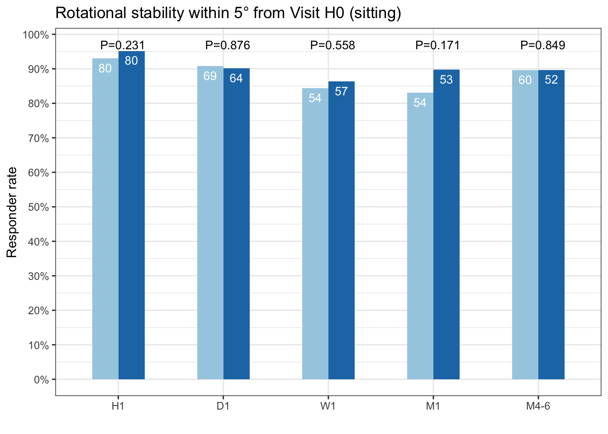
ggbarplot(dfm, x = "name", y = "mpg",
fill = "cyl", # change fill color by cyl
color = "white", # Set bar border colors to white
palette = "jco", # jco journal color palett. see ?ggpar
sort.val = "asc", # Sort the value in dscending order
sort.by.groups = TRUE, # Sort inside each group
x.text.angle = 90 # Rotate vertically x axis texts
)Lollipop Chart
## Lollipop charts conveys the same information as in bar charts. By reducing the thick bars into thin lines, it reduces the clutter and lays more emphasis on the value. It looks nice and modern.
ggplot(cty_mpg, aes(x=make, y=mileage)) +
geom_point(size=3) +
geom_segment(aes(x=make,
xend=make,
y=0,
yend=mileage)) +
labs(title="Lollipop Chart",
subtitle="Make Vs Avg. Mileage",
caption="source: mpg") +
theme(axis.text.x = element_text(angle=65, vjust=0.6))Deviation Graphs
# Data Prep
data("mtcars") # load data
mtcars$`car name` <- rownames(mtcars) # create new column for car names
mtcars$mpg_z <- round((mtcars$mpg - mean(mtcars$mpg))/sd(mtcars$mpg), 2) # compute normalized mpg
mtcars$mpg_type <- ifelse(mtcars$mpg_z < 0, "below", "above") # above / below avg flag
mtcars <- mtcars[order(mtcars$mpg_z), ] # sort
mtcars$`car name` <- factor(mtcars$`car name`, levels = mtcars$`car name`) # convert to factor to retain sorted order in plot.
ggplot(mtcars, aes(x=`car name`, y=mpg_z, label=mpg_z)) +
geom_bar(stat='identity', aes(fill=mpg_type), width=.5) +
scale_fill_manual(name="Mileage",
labels = c("Above Average", "Below Average"),
values = c("above"="#00ba38", "below"="#f8766d")) +
labs(subtitle="Normalised mileage from 'mtcars'",
title= "Diverging Bars") +
coord_flip() +
theme_bw()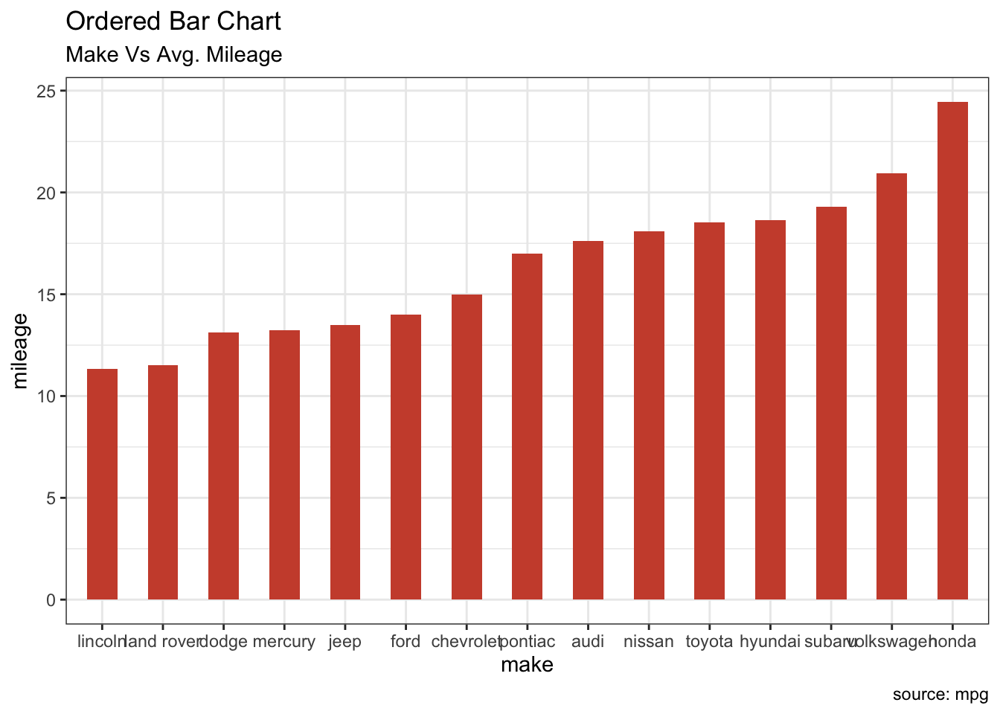
Alternative using ggpubr package
# Diverging Barcharts
mtcars %>%
ggbarplot(x = "car name", y = "mpg_z",
fill = "mpg_type", # change fill color by mpg_level
color = "white", # Set bar border colors to white
palette = "jco", # jco journal color palett. see ?ggpar
sort.val = "asc", # Sort the value in ascending order
sort.by.groups = FALSE, # Don't sort inside each group
x.text.angle = 90, # Rotate vertically x axis texts
ylab = "MPG z-score",
xlab = FALSE,
legend.title = "MPG Group"
)
mtcars %>%
ggbarplot(x = "car name", y = "mpg_z",
fill = "mpg_type", # change fill color by mpg_level
color = "white", # Set bar border colors to white
palette = "jco", # jco journal color palett. see ?ggpar
sort.val = "desc", # Sort the value in ascending order
sort.by.groups = FALSE, # Don't sort inside each group
x.text.angle = 90, # Rotate vertically x axis texts
ylab = "MPG z-score",
xlab = TRUE,
rotate = TRUE,
legend.title = "MPG Group",
ggtheme = theme_minimal()
)Means and Error Bars
PrimEnd <- data.frame('Primary Endpoint'=c("Primary Analysis",
"Sensitivity Analysis 1",
"Sensitivity Analysis 2",
"Primary Analysis after imputation"),
mean=c(-0.2945, -0.08334, -0.2926, -0.2395),
LL=c(-0.9612, -0.2861, -0.9344, -0.7521),
UL=c(0.3722, 0.1194, 0.3491, 0.2730),
pvalue=c("P = 0.313", "P = 0.347", "P = 0.304","P = 0.359"))
level <- PrimEnd$Primary.Endpoint
PrimEnd$Primary.Endpoint <- factor(PrimEnd$Primary.Endpoint, levels=level)
ggplot(PrimEnd, aes(x=Primary.Endpoint, y=mean)) +
geom_line() +
geom_point()+
geom_text(aes(label=pvalue),hjust=-0.2, vjust=0) +
geom_hline(aes(yintercept=0, color="black", linetype="dot")) +
geom_errorbar(aes(ymin=LL, ymax=UL), width = 0.5, size = 0.5)+
theme_bw() +
theme(legend.position = "none") +
labs(x = "",
y = "Difference between the IOLs",
title = "Superiority analysis in mean absolute rotation between Visit H0 (sitting) and H1")tg <- ToothGrowth
# Gives count, mean, standard deviation, standard error of the mean, and confidence interval (default 95%).
# data: a data frame.
# measurevar: the name of a column that contains the variable to be summariezed
# groupvars: a vector containing names of columns that contain grouping variables
# na.rm: a boolean that indicates whether to ignore NA's
# conf.interval: the percent range of the confidence interval (default is 95%)
summarySE <- function(data=NULL, measurevar, groupvars=NULL, na.rm=FALSE,
conf.interval=.95, .drop=TRUE) {
library(plyr)
# New version of length which can handle NA's: if na.rm==T, don't count them
length2 <- function (x, na.rm=FALSE) {
if (na.rm) sum(!is.na(x))
else length(x)
}
# This does the summary. For each group's data frame, return a vector with
# N, mean, and sd
datac <- ddply(data, groupvars, .drop=.drop,
.fun = function(xx, col) {
c(N = length2(xx[[col]], na.rm=na.rm),
mean = mean (xx[[col]], na.rm=na.rm),
sd = sd (xx[[col]], na.rm=na.rm)
)
},
measurevar
)
# Rename the "mean" column
datac <- rename(datac, c("mean" = measurevar))
datac$se <- datac$sd / sqrt(datac$N) # Calculate standard error of the mean
# Confidence interval multiplier for standard error
# Calculate t-statistic for confidence interval:
# e.g., if conf.interval is .95, use .975 (above/below), and use df=N-1
ciMult <- qt(conf.interval/2 + .5, datac$N-1)
datac$ci <- datac$se * ciMult
return(datac)
}
tgc <- summarySE(tg, measurevar="len", groupvars=c("supp","dose"))
# The errorbars overlapped, so use position_dodge to move them horizontally
pd <- position_dodge(0.1)
ggplot(tgc, aes(x=dose, y=len, colour=supp, group=supp)) +
geom_errorbar(aes(ymin=len-se, ymax=len+se), colour="black", width=.1, position=pd) +
geom_line(position=pd) +
geom_point(position=pd, size=3, shape=21, fill="white") + # 21 is filled circle
xlab("Dose (mg)") +
ylab("Tooth length") +
scale_colour_hue(name="Supplement type", # Legend label, use darker colors
breaks=c("OJ", "VC"),
labels=c("Orange juice", "Ascorbic acid"),
l=40) + # Use darker colors, lightness=40
ggtitle("The Effect of Vitamin C on\nTooth Growth in Guinea Pigs") +
expand_limits(y=0) + # Expand y range
scale_y_continuous(breaks=0:20*4) + # Set tick every 4
theme_bw() +
theme(legend.justification=c(1,0),
legend.position=c(1,0)) # Position legend in bottom righttgc2 <- tgc
tgc2$dose <- factor(tgc2$dose)
ggplot(tgc2, aes(x=dose, y=len, fill=supp)) +
geom_bar(position=position_dodge(), stat="identity",
colour="black", # Use black outlines,
size=.3) + # Thinner lines
geom_errorbar(aes(ymin=len-se, ymax=len+se),
size=.3, # Thinner lines
width=.2,
position=position_dodge(.9)) +
xlab("Dose (mg)") +
ylab("Tooth length") +
scale_fill_hue(name="Supplement type", # Legend label, use darker colors
breaks=c("OJ", "VC"),
labels=c("Orange juice", "Ascorbic acid")) +
ggtitle("The Effect of Vitamin C on\nTooth Growth in Guinea Pigs") +
scale_y_continuous(breaks=0:20*4) +
theme_bw()Circular Barplot
Basic Using coord_polar()
# Create dataset
data <- data.frame(
id=seq(1,60),
individual=paste( "Mister ", seq(1,60), sep=""),
value=sample( seq(10,100), 60, replace=T)
)
# Get the name and the y position of each label
label_data <- data
# calculate the ANGLE of the labels
number_of_bar <- nrow(label_data)
angle <- 90 - 360 * (label_data$id-0.5) /number_of_bar
# Substracting 0.5 because the letter must have the angle of the center of the bars.
# Not extreme right(1) or extreme left (0)
# calculate the alignment of labels: right or left
# If I am on the left part of the plot, my labels have currently an angle < -90
label_data$hjust<-ifelse( angle < -90, 1, 0)
# flip angle BY to make them readable
label_data$angle<-ifelse(angle < -90, angle+180, angle)
# ----- ------------------------------------------- ---- #
# Start the plot
p <- ggplot(data, aes(x=as.factor(id), y=value)) + # Note that id is a factor. If x is numeric, there is some space between the first bar
# This add the bars with a blue color
geom_bar(stat="identity", fill=alpha("skyblue", 0.7)) +
# Limits of the plot = very important. The negative value controls the size of the inner circle, the positive one is useful to add size over each bar
ylim(-100,120) +
# Custom the theme: no axis title and no cartesian grid
theme_minimal() +
theme(
axis.text = element_blank(),
axis.title = element_blank(),
panel.grid = element_blank(),
plot.margin = unit(rep(-1,4), "cm") # Adjust the margin to make in sort labels are not truncated!
) +
# This makes the coordinate polar instead of cartesian.
coord_polar(start = 0) +
# Add the labels, using the label_data dataframe that we have created before
geom_text(data=label_data, aes(x=id, y=value+10, label=individual, hjust=hjust), color="black", fontface="bold",alpha=0.8, size=3, angle= label_data$angle, inherit.aes = FALSE )
pCircular barplot with gap
# Create dataset
data <- data.frame(
individual=paste( "Mister ", seq(1,60), sep=""),
value=sample( seq(10,100), 60, replace=T)
)
# Set a number of 'empty bar'
empty_bar <- 10
# Add lines to the initial dataset
to_add <- matrix(NA, empty_bar, ncol(data))
colnames(to_add) <- colnames(data)
data <- rbind(data, to_add)
data$id <- seq(1, nrow(data))
# Get the name and the y position of each label
label_data <- data
number_of_bar <- nrow(label_data)
angle <- 90 - 360 * (label_data$id-0.5) /number_of_bar # I substract 0.5 because the letter must have the angle of the center of the bars. Not extreme right(1) or extreme left (0)
label_data$hjust <- ifelse( angle < -90, 1, 0)
label_data$angle <- ifelse(angle < -90, angle+180, angle)
# Make the plot
p <- ggplot(data, aes(x=as.factor(id), y=value)) + # Note that id is a factor. If x is numeric, there is some space between the first bar
geom_bar(stat="identity", fill=alpha("green", 0.3)) +
ylim(-100,120) +
theme_minimal() +
theme(
axis.text = element_blank(),
axis.title = element_blank(),
panel.grid = element_blank(),
plot.margin = unit(rep(-1,4), "cm")
) +
coord_polar(start = 0) +
geom_text(data=label_data, aes(x=id, y=value+10, label=individual, hjust=hjust), color="black", fontface="bold",alpha=0.6, size=2.5, angle= label_data$angle, inherit.aes = FALSE )
p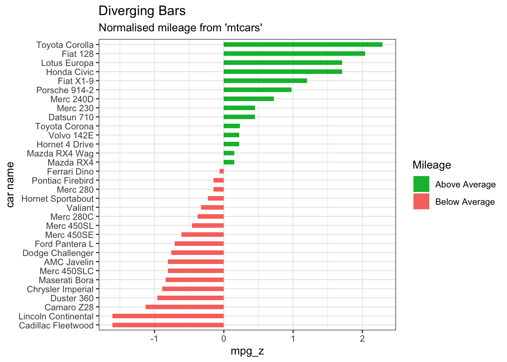
Groups
# Create dataset
data <- data.frame(
individual=paste( "Mister ", seq(1,60), sep=""),
group=c( rep('A', 10), rep('B', 30), rep('C', 14), rep('D', 6)) ,
value=sample( seq(10,100), 60, replace=T)
)
# Order data:
data = data %>% arrange(group, value)
# Set a number of 'empty bar' to add at the end of each group
empty_bar <- 4
to_add <- data.frame( matrix(NA, empty_bar*nlevels(data$group), ncol(data)) )
colnames(to_add) <- colnames(data)
to_add$group <- rep(levels(data$group), each=empty_bar)
data <- rbind(data, to_add)
data <- data %>% arrange(group)
data$id <- seq(1, nrow(data))
# Get the name and the y position of each label
label_data <- data
number_of_bar <- nrow(label_data)
angle <- 90 - 360 * (label_data$id-0.5) /number_of_bar # I substract 0.5 because the letter must have the angle of the center of the bars. Not extreme right(1) or extreme left (0)
label_data$hjust <- ifelse( angle < -90, 1, 0)
label_data$angle <- ifelse(angle < -90, angle+180, angle)
# Make the plot
p <- ggplot(data, aes(x=as.factor(id), y=value, fill=group)) + # Note that id is a factor. If x is numeric, there is some space between the first bar
geom_bar(stat="identity", alpha=0.5) +
ylim(-100,120) +
theme_minimal() +
theme(
legend.position = "none",
axis.text = element_blank(),
axis.title = element_blank(),
panel.grid = element_blank(),
plot.margin = unit(rep(-1,4), "cm")
) +
coord_polar() +
geom_text(data=label_data, aes(x=id, y=value+10, label=individual, hjust=hjust), color="black", fontface="bold",alpha=0.6, size=2.5, angle= label_data$angle, inherit.aes = FALSE )
p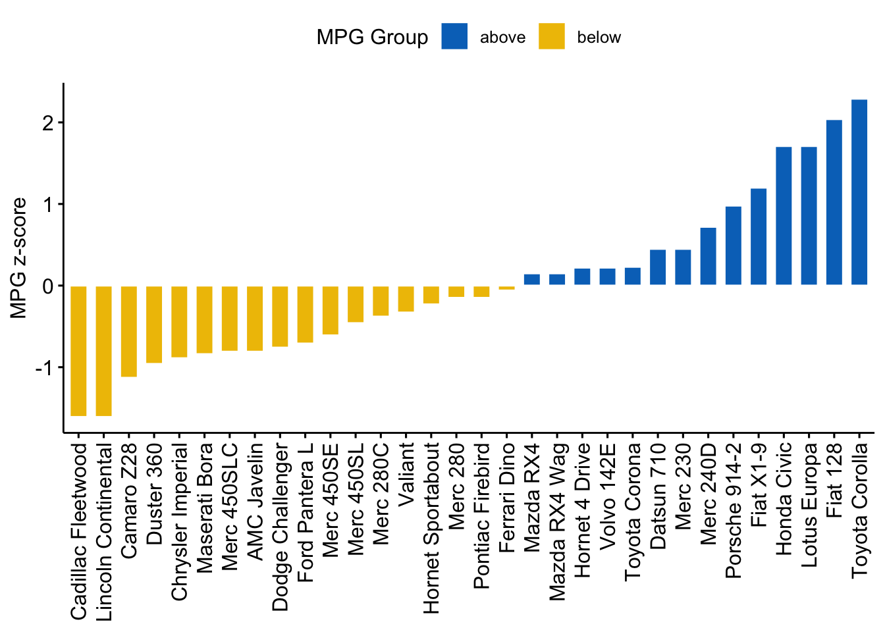
Customization
# Create dataset
data <- data.frame(
individual=paste( "Mister ", seq(1,60), sep=""),
group=c( rep('A', 10), rep('B', 30), rep('C', 14), rep('D', 6)) ,
value=sample( seq(10,100), 60, replace=T)
)
# Set a number of 'empty bar' to add at the end of each group
empty_bar <- 3
to_add <- data.frame( matrix(NA, empty_bar*nlevels(data$group), ncol(data)) )
colnames(to_add) <- colnames(data)
to_add$group <- rep(levels(data$group), each=empty_bar)
data <- rbind(data, to_add)
data <- data %>% arrange(group)
data$id <- seq(1, nrow(data))
# Get the name and the y position of each label
label_data <- data
number_of_bar <- nrow(label_data)
angle <- 90 - 360 * (label_data$id-0.5) /number_of_bar # I substract 0.5 because the letter must have the angle of the center of the bars. Not extreme right(1) or extreme left (0)
label_data$hjust <- ifelse( angle < -90, 1, 0)
label_data$angle <- ifelse(angle < -90, angle+180, angle)
# prepare a data frame for base lines
base_data <- data %>%
group_by(group) %>%
dplyr::summarize(start=min(id), end=max(id) - empty_bar) %>%
rowwise() %>%
mutate(title=mean(c(start, end)))
# prepare a data frame for grid (scales)
grid_data <- base_data
grid_data$end <- grid_data$end[ c( nrow(grid_data), 1:nrow(grid_data)-1)] + 1
grid_data$start <- grid_data$start - 1
grid_data <- grid_data[-1,]
# Make the plot
ggplot(data, aes(x=as.factor(id), y=value, fill=group)) + # Note that id is a factor. If x is numeric, there is some space between the first bar
geom_bar(aes(x=as.factor(id), y=value, fill=group), stat="identity", alpha=0.5) +
# Add a val=100/75/50/25 lines. I do it at the beginning to make sur barplots are OVER it.
geom_segment(data=grid_data, aes(x = end, y = 80, xend = start, yend = 80), colour = "grey", alpha=1, size=0.3 , inherit.aes = FALSE ) +
geom_segment(data=grid_data, aes(x = end, y = 60, xend = start, yend = 60), colour = "grey", alpha=1, size=0.3 , inherit.aes = FALSE ) +
geom_segment(data=grid_data, aes(x = end, y = 40, xend = start, yend = 40), colour = "grey", alpha=1, size=0.3 , inherit.aes = FALSE ) +
geom_segment(data=grid_data, aes(x = end, y = 20, xend = start, yend = 20), colour = "grey", alpha=1, size=0.3 , inherit.aes = FALSE ) +
# Add text showing the value of each 100/75/50/25 lines
annotate("text", x = rep(max(data$id),4), y = c(20, 40, 60, 80), label = c("20", "40", "60", "80") , color="grey", size=3 , angle=0, fontface="bold", hjust=1) +
geom_bar(aes(x=as.factor(id), y=value, fill=group), stat="identity", alpha=0.5) +
ylim(-100,120) +
theme_minimal() +
theme(
legend.position = "none",
axis.text = element_blank(),
axis.title = element_blank(),
panel.grid = element_blank(),
plot.margin = unit(rep(-1,4), "cm")
) +
coord_polar() +
geom_text(data=label_data, aes(x=id, y=value+10, label=individual, hjust=hjust), color="black", fontface="bold",alpha=0.6, size=2.5, angle= label_data$angle, inherit.aes = FALSE ) +
# Add base line information
geom_segment(data=base_data, aes(x = start, y = -5, xend = end, yend = -5), colour = "black", alpha=0.8, size=0.6 , inherit.aes = FALSE ) +
geom_text(data=base_data, aes(x = title, y = -18, label=group), hjust=c(1,1,0,0), colour = "black", alpha=0.8, size=4, fontface="bold", inherit.aes = FALSE)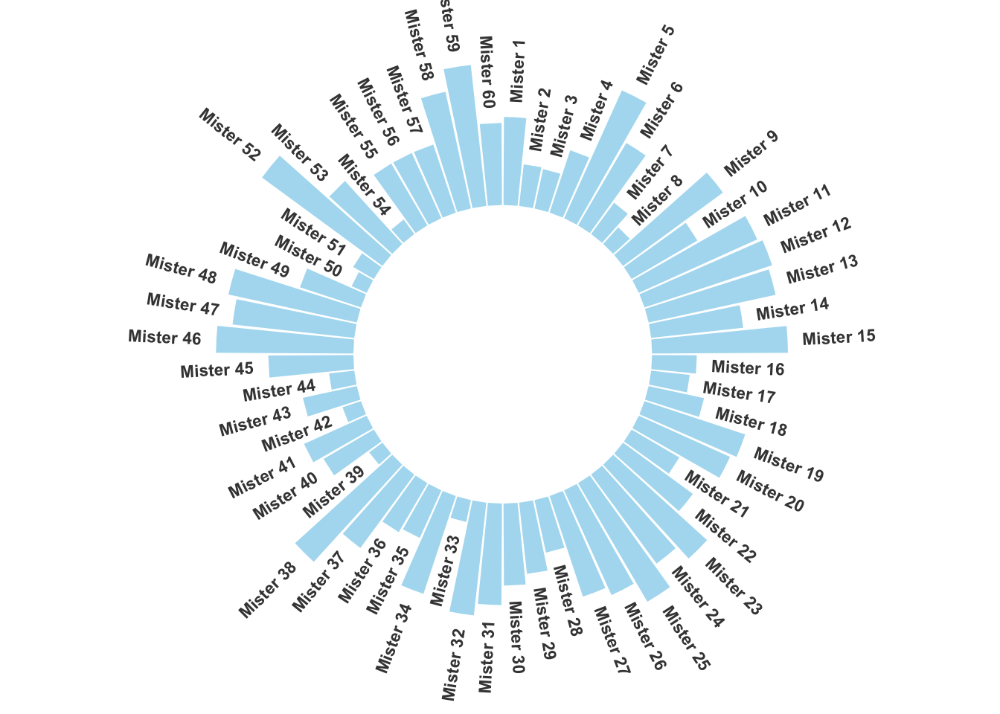
Circular Stacked Barplot
# Create dataset
data <- data.frame(
individual=paste( "Mister ", seq(1,60), sep=""),
group=c( rep('A', 10), rep('B', 30), rep('C', 14), rep('D', 6)) ,
value1=sample( seq(10,100), 60, replace=T),
value2=sample( seq(10,100), 60, replace=T),
value3=sample( seq(10,100), 60, replace=T)
)
# Transform data in a tidy format (long format)
data <- data %>% gather(key = "observation", value="value", -c(1,2))
# Set a number of 'empty bar' to add at the end of each group
empty_bar <- 2
nObsType <- nlevels(as.factor(data$observation))
to_add <- data.frame( matrix(NA, empty_bar*nlevels(data$group)*nObsType, ncol(data)) )
colnames(to_add) <- colnames(data)
to_add$group <- rep(levels(data$group), each=empty_bar*nObsType )
data <- rbind(data, to_add)
data <- data %>% arrange(group, individual)
data$id <- rep( seq(1, nrow(data)/nObsType) , each=nObsType)
# Get the name and the y position of each label
label_data <- data %>%
group_by(id, individual) %>% dplyr::summarize(tot=sum(value))
number_of_bar <- nrow(label_data)
angle <- 90 - 360 * (label_data$id-0.5) /number_of_bar
# I substract 0.5 because the letter must have the angle of the center of the bars. Not extreme right(1) or extreme left (0)
label_data$hjust <- ifelse(angle < -90, 1, 0)
label_data$angle <- ifelse(angle < -90, angle+180, angle)
# prepare a data frame for base lines
base_data <- data %>%
group_by(group) %>%
dplyr::summarize(start=min(id), end=max(id) - empty_bar) %>%
rowwise() %>%
mutate(title=mean(c(start, end)))
# prepare a data frame for grid (scales)
grid_data <- base_data
grid_data$end <- grid_data$end[ c( nrow(grid_data), 1:nrow(grid_data)-1)] + 1
grid_data$start <- grid_data$start - 1
grid_data <- grid_data[-1,]
# Make the plot
p <- ggplot(data) +
# Add the stacked bar
geom_bar(aes(x=as.factor(id), y=value, fill=observation), stat="identity", alpha=0.5) +
scale_fill_viridis(discrete=TRUE) +
# Add a val=100/75/50/25 lines. I do it at the beginning to make sur barplots are OVER it.
geom_segment(data=grid_data, aes(x = end, y = 0, xend = start, yend = 0), colour = "grey", alpha=1, size=0.3 , inherit.aes = FALSE ) +
geom_segment(data=grid_data, aes(x = end, y = 50, xend = start, yend = 50), colour = "grey", alpha=1, size=0.3 , inherit.aes = FALSE ) +
geom_segment(data=grid_data, aes(x = end, y = 100, xend = start, yend = 100), colour = "grey", alpha=1, size=0.3 , inherit.aes = FALSE ) +
geom_segment(data=grid_data, aes(x = end, y = 150, xend = start, yend = 150), colour = "grey", alpha=1, size=0.3 , inherit.aes = FALSE ) +
geom_segment(data=grid_data, aes(x = end, y = 200, xend = start, yend = 200), colour = "grey", alpha=1, size=0.3 , inherit.aes = FALSE ) +
# Add text showing the value of each 100/75/50/25 lines
ggplot2::annotate("text", x = rep(max(data$id),5), y = c(0, 50, 100, 150, 200), label = c("0", "50", "100", "150", "200") , color="grey", size=6 , angle=0, fontface="bold", hjust=1) +
ylim(-150,max(label_data$tot, na.rm=T)) +
theme_minimal() +
theme(
legend.position = "none",
axis.text = element_blank(),
axis.title = element_blank(),
panel.grid = element_blank(),
plot.margin = unit(rep(-1,4), "cm")
) +
coord_polar() +
# Add labels on top of each bar
geom_text(data=label_data, aes(x=id, y=tot+10, label=individual, hjust=hjust), color="black", fontface="bold",alpha=0.6, size=5, angle= label_data$angle, inherit.aes = FALSE ) +
# Add base line information
geom_segment(data=base_data, aes(x = start, y = -5, xend = end, yend = -5), colour = "black", alpha=0.8, size=0.6 , inherit.aes = FALSE ) +
geom_text(data=base_data, aes(x = title, y = -18, label=group), hjust=c(1,1,0,0), colour = "black", alpha=0.8, size=4, fontface="bold", inherit.aes = FALSE)
p# Save at png
# ggsave(p, file="output.png", width=10, height=10)Interactive Plot
plotly package
# library(viridis)
# library(hrbrthemes)
p1 <- ggplot(data = diamonds) +
geom_bar(mapping = aes(x = cut, fill = clarity), position = "dodge")+
scale_fill_viridis(discrete = T) +
ggtitle("Add Title Here...") +
theme_ipsum() +
xlab("")
ggplotly(p1)p2 <- ggplot(data = diamonds) +
geom_bar(mapping = aes(x = cut, fill = clarity), position = "stack")+
scale_fill_viridis(discrete = T) +
ggtitle("Add Title Here...") +
theme_ipsum() +
xlab("")
ggplotly(p2)p3 <- ggplot(data = diamonds) +
geom_bar(mapping = aes(x = cut, fill = clarity), position = "fill", width = 0.5) +
theme(axis.text.x = element_text(angle=65, vjust=0.6)) +
labs(title="Add Title Here...",
subtitle="Add Subtitle Here...")
ggplotly(p3)ggiraph package
## reference https://rkabacoff.github.io/datavis/Interactive.html#ggiraph
library("ggiraph")
library("patchwork")
data(gapminder, package="gapminder")
# subset Asian countries
asia <- gapminder %>%
filter(continent == "Asia") %>%
select(year, country, lifeExp)
p1 <- ggplot(asia[asia$year == 1982,],
aes(y = reorder(country, lifeExp),
x=lifeExp,
tooltip = lifeExp,
data_id = country)) +
geom_bar_interactive(stat="identity",
fill="steelblue") +
labs(y="", x="1982") +
theme_minimal()
p2 <- ggplot(asia[asia$year == 2007,],
aes(y = reorder(country, lifeExp),
x=lifeExp,
tooltip = lifeExp,
data_id = country)) +
geom_bar_interactive(stat="identity",
fill="steelblue") +
labs(y="", x="2007") +
theme_minimal()
p3 <- (p1 | p2) +
plot_annotation(title = "Life Expectancy in Asia")
girafe(code = print (p3))